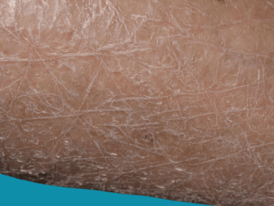

What is ichthyosis?
Ichthyosis is the term used to describe continual and widespread scaling of the skin. It may be inherited
(genetic) or acquired during life. The inherited forms are rare, generally present from infancy, and are
usually lifelong conditions. Acquired ichthyosis can develop at any age due to a number of medical problems,
such as kidney disease.
The commoner forms of inherited ichthyosis are mild and do improve in the summertime. There are a number
of very rare conditions where ichthyosis occurs with problems in other systems of the body. Each of the
major types of ichthyosis will be discussed briefly, followed by an outline of the management.

Inherited ichthyosis is due to a single genetic flaw which is passed on either from one parent or both
parents, or develops as a new fault in the gene very early in foetal life. It can be mild as with
ichthyosis vulgaris, or severe.
This is the commonest form of inherited ichthyosis, affecting one in every 250 people. It is usually
quite mild and develops in early childhood with fine, light grey scales and roughness on the upper
and lower limbs, but sparing the folds of the arms and legs. It may be more widespread and is more
obvious in the winter time and in temperate climates. It is sometimes associated with atopic or
childhood allergic eczema and may cause an increased wrinkling of the palms and soles.
It can be treated with regular application of moisturisers. It improves in adult life and may be
passed on to a sufferer's children, with a risk for each child of 50% (autosomal dominant transmission).
This condition occurs in males only and develops in infancy with tan or grey scales on the limbs and across the trunk.
It may affect the ears and face and the scales appear to be stuck on like stamps. It varies in its severity and
improves in fine or sunny weather. It changes very little with age.
This condition is passed on by a mother, who is a carrier of the abnormal gene, to her son with a 50% risk for
each son (X-linked recessive transmission). A carrier mother shows no evidence of the condition. The gene that
causes this condition has been identified and, very rarely, a similar fault can affect adjacent genes on the
same chromosome, causing a variety of other problems for an affected male, for instance, bony defects or
lack of the sense of smell.
A mother who is carrying an affected male baby may have a prolonged and consequently difficult labour.
It is important for family members who may carry this gene to inform their obstetricians. A small number
of affected boys have poorly descended or undescended testicles; it is usual to check this aspect of
development in affected families. The child's growth should be monitored from time to time. It is
quite common to have very small specks in the front of the eye, both in the affected boy and
sometimes also in the boy's mother. These do not interfere with vision.
There are two types of ichthyosis in this category. They generally declare themselves at birth with the
appearance of a so-called collodion membrane on the newborn baby. This is a shiny yellow film stretched
across the skin like a sausage skin. It dries out and gradually sheds within the first week of life.
The "collodion baby" is nursed in a humidified incubator until the skin settles down. The majority of
collodion babies will develop congenital ichthyosiform erythroderma. However, a small number of these
babies will have normal skin once the membrane is shed and, therefore, it is not possible to accurately
predict the outcome in the early stages.
Most collodion babies develop non-bullous ichthyosiform erythroderma, which literally means inflamed,
scaly skin, without blisters. It affects 1 in every 300,000 births and so is quite rare. Once the
collodion membrane has shed, the skin remains red and has fine, white scales affecting the entire
skin surface. In severely affected children the eyelids may be pulled outwards and there may be some
mild scalp hair loss and tightness of the fingers. Because the skin is inflamed it will feel hot,
even if the child is cold. Most children with this condition do not sweat normally and may overheat
in hot weather, when exercising or with a fever. The palms and soles are sometimes thickened and scaly.
Otherwise a child's health is normal. They may suffer cosmetically and this is especially important
when a child starts school, or in the teenage years.
The less common form of congenital ichthyosiform erythroderma is lamellar ichthyosis. This is different
in that the skin is less red but the scaling is larger, perhaps darker and more adherent, or stuck down.
These two conditions are passed on by parents with normal skin who both carry the abnormal gene
(autosomal recessive) and the risk of a further child being affected is 1 in 4. They can be diagnosed on a
skin biopsy from the foetus taken halfway (between 18 - 20 weeks) through a pregnancy, if the parents
want to know; however, there is no way of preventing them before conception, as the abnormal gene has
not yet been identified.
Bullous ichthyosiform erythroderma, also known as bullous ichthyosis, is another rare inherited ichthyosis.
At birth the baby's skin seems to be fragile and may show blisters, without much scaling. This causes severe
problems for the young infant and intensive care is sometimes necessary in the first few weeks of life.
A skin biopsy will be required early on to confirm the diagnosis. During the first year or two of life,
the blistering tendency reduces but widespread redness, scaling and thickening of the skin becomes more
obvious through childhood. This produces warty skin changes around the creases of the joints.
Skin infections are quite common and can lead to a characteristic odour. There may be a reduction in
sweating in childhood, which improves later in life. This is a troublesome and distressing condition
for the child and the family.
It is transmitted as an autosomal dominant disorder, which means that one of the parents may be affected.
However, in at least half of affected children, neither parent is affected; therefore the child has developed
a new gene fault while growing in the womb. This means that there is no risk above the ordinary for further
pregnancies in that family although the child may pass on the condition onto the next generation. Detailed
genetic counselling is necessary.
Harlequin ichthyosis is a very severe, but extremely rare type of inherited ichthyosis (approximately 3
per year in the UK). It is evident at birth because the newborn baby looks like a harlequin costume,
with very thick scaling all over. Intensive care is required and detailed information on the condition
will be needed for the parents and staff.
The incidence of this condition is not known but it is probably in the region of 1 in each 200,000 births
in the UK. The newborn child is very red and has scaly or peeling skin. The infant is often underweight
and slow to grow and this problem continues for the first year or two of life. The affected child may
need prolonged hospital treatment until both the skin and the nutrition improve. A characteristic feature
of Netherton's syndrome is thin fragile scalp hair in the baby. Later it is spiky and this is an important
clue to the diagnosis. In many affected children the skin improves in childhood, although it can flare up
without warning.
Netherton's syndrome is an autosomal recessive disorder where both parents are carriers and show no
sign of the condition. There is however a risk to further babies of the order of 25%.
There are a number of other genetic or inherited forms of ichthyosis where there are other medical
problems but these are so uncommon that they are not discussed here.
Depending on the type of gene abnormality that causes ichthyosis, the skin can show different patterns of flaking.
In most cases of ichthyosis vulgaris, for example, skin will flake over the majority of the body, but not on the
inside surfaces of joints, in the groin area or on the face.
Symptoms of all genetic types of ichthyosis are either noticeable at birth or appear during childhood. Symptoms may include:
- Severe dryness of the skin with thickening and flaking, which may be appear only in limited areas or may involve
almost the entire skin surface
- Mild itching of the skin
- Body odor, because the spaces under and between skin flakes can harbor collections of bacteria or fungus
- Wax buildup in the ears, causing hearing difficulties
Treatment of all types of ichthyosis involves restoring the skin's moisture and facilitating more aggressive
shedding of dead skin cells. Regular visits to a dermatologist can help when ichthyosis causes severe symptoms.
To get the best results, use moisture-retaining creams or ointments after a bath or shower, so that moisture
is maintained within the skin surface. Petrolatum, lanolin or urea-containing preparations are very helpful
in maintaining skin moisture.
Also helpful are medicines that promote shedding of skin flakes. These include lotions or creams that contain
lactic acid or other "alpha-hydroxy acids."
If the ichthyosis leads to scratching that causes skin infections, or if body odor is a major problem, antibiotics
may be needed from time to time.